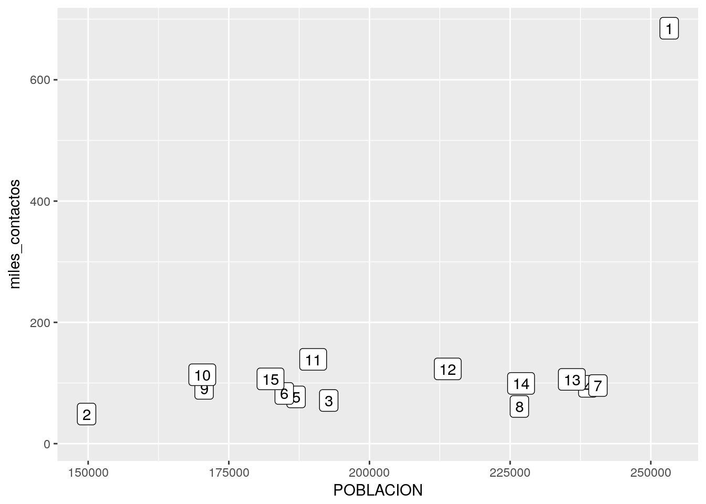

Capítulo 3 Poniendo los datos en forma
[[ INTRODUCCIÓN PENDIENTE]]
Vamos a traer datos de mortalidad infantil por comuna de la ciudad y por año entre 2010 y 2016, publicados por la Dirección General de Estadística y Censos de la ciudad.
mortalidad <- read.csv('https://bitsandbricks.github.io/data/mortalidad_infantil_caba.csv')Con gather() vamos a cambiar nuestro dataset para volverlo “prolijo”. Más adelante vamos a hablar mal de la dicotomía entre datos prolijos vs. datos desprolijos, o “tidy vs. messy” en inglés. Por ahora alcanza con decir que los datos prolijos son aquellos en que cada fila representa una y sólo una observación por variable. Así como está, nuestra data de mortalidad tiene en cada fila una variable observada 7 veces; una vez por año del 2010 al 2016:
head(mortalidad)## Comuna X2010 X2011 X2012 X2013 X2014 X2015 X2016
## 1 1 9.9 9.1 10.7 8.9 4.9 7.6 9.5
## 2 2 6.7 6.6 5.1 7.5 9.2 4.5 3.6
## 3 3 4.9 10.8 7.2 11.9 9.4 5.4 8.0
## 4 4 9.9 11.1 11.8 11.8 12.3 7.2 11.9
## 5 5 3.6 7.2 5.7 8.7 6.7 6.7 8.5
## 6 6 3.2 5.2 9.0 6.8 7.5 5.7 2.4Para pasar a formato prolijo usamos la función gather() (por “recolectar” en inglés) que justamente recoge las observaciones esparcidas a lo largo de las columnas y las convierte en filas distintas, una por observación. Vamos a pedir a la funcion gather que tome la variable mortalidad (que contiene nuestro dataframe), y que tome las columnas que van de X2010 hasta X2016 para guardar el nombre de la columna en la nueva variable “año”, y el contenido de la susodicha en la nueva variable “mortalida”. ¡Puf! Es más breve el código que la explicación:
mortalidad <- gather(mortalidad, key = "año", value = "mortalidad", X2010:X2016)
head(mortalidad)## Comuna año mortalidad
## 1 1 X2010 9.9
## 2 2 X2010 6.7
## 3 3 X2010 4.9
## 4 4 X2010 9.9
## 5 5 X2010 3.6
## 6 6 X2010 3.2¡Lo logramos! Obsérvese que espcificamos el nombre de algunos de los parámetros que recibe la función, por ejemplo key == “año”. Esto no es necesario con funciones que toman un sólo parámetro, pero es útil cuando son varios, ya que permite aclarar a la función cual es cual.
Ahora tenemos un problema de formato. Los años figuran como “X2010”, “X2011”… en lugar de “2010”, “2011”, etc. La función mutate() nos permite cambiar el contenido de las columnas de un dataframe de acuerdo a reglas, o aplicando funciones, según lo que necesitemos. Vamos a pedirle a mutate que tome la columna “año”, y que al contenido le quite la “X”. La función sub() se encargar de sustituir la “X” por un “”, que equivale a decir “retira la X y no la reemplaces por nada”:
mortalidad <- mutate(mortalidad, año = sub('X', "", año))
head(mortalidad)## Comuna año mortalidad
## 1 1 2010 9.9
## 2 2 2010 6.7
## 3 3 2010 4.9
## 4 4 2010 9.9
## 5 5 2010 3.6
## 6 6 2010 3.2Bien. Y ahora, a graficar. Vamos a llamar a la función ggplot(), una auténtica navaja suiza para la visualización.
Por ejemplo, tracemos líneas que conecten los valores a lo largo de los años para cada comuna:
ggplot(mortalidad) +
geom_line(aes(x = año, y = mortalidad, group = Comuna, color = factor(Comuna)))
El gráfico que hemos creado es un poco confuso. ¡Luce como una colorida maraña de hilos! Un ojo entrenado puede, de todas formas, descubrir varias cosas: hay 15 comunas en la ciudad; la tasa de mortalidad tiene un rango que va de un poco menos de 2,5 a un poco más de 12,5 (esto es, muertes antes del año de vida por cada 10.000 nacimientos); en el año 2015 se observó un notable descenso general, que fue revertido por un ascenso generalizado tan sólo un año después.
Continuará…